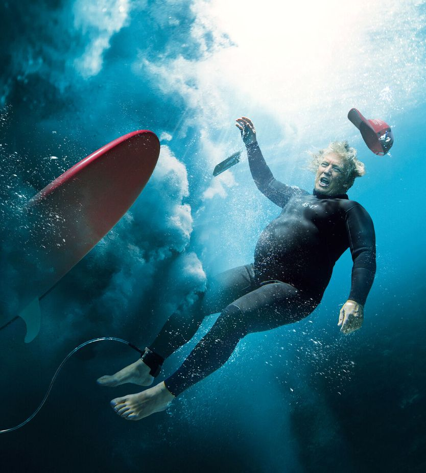

特朗普的羞辱，给了美国一个机会
Donald Trump’s humiliation offers America an opportunity
水门事件以来最大的浪潮把共和党拍进水里，真正的考验才刚开头。

- 这不是一次常规的中期选举摆动，而是水门事件之后五十多年来最大的一次浪潮：民主党拿下参众两院，参议院54席、众议院约260席，众议院普选票预计领先13个百分点。
- 选民把票投成了对总统的裁决：关税战与对伊朗的战争推高物价，不断的自我标榜和给家人朋友输送利益激怒选民，九成美国人认为政府腐败盛行。
- 金钱和恐惧牌同时失灵：马斯克投入1.5亿美元的得克萨斯选战惨败，靠炒作穆斯林与跨性别议题动员的候选人纷纷落选，选区划分也没换来新增席位。
- 真正的考验转到民主党这边：如果只忙于发传票和弹劾、改善不了普通人的日子，选民会觉得又被骗了一次，与白宫缠斗还会让立法更难通过。
冲浪者把这叫作洗衣机。巨浪把人从板上掀下去、按进水里时，你会完全失去方位感。11月3日，唐纳德·特朗普和他的政党遭遇的就是这种情形——数千万美国选民把他们拍进了水里。他们至今还没弄明白，这个国家已经变了多少。
已经很清楚，这不是一次针对在任总统的常规中期选举摆动，而是水门事件之后五十多年来最大的一次浪潮式选举。民主党拿下国会两院控制权，把席位一路翻进从南卡罗来纳到得克萨斯这些曾经的深红水域。
未来几天还会显出两点。其一，这不仅是民主党的胜利，也是美国民主的胜利。选民不是理所当然的票仓：他们一旦愤怒，就会掉头反对自己长期支持的政党。其二由此而来：两党现在都需要找到新的政治做法——少花时间煽动基本盘，多花时间替他们把事情办成。
浪潮扫过全美。还有一些选区未出结果，民主党已握有参议院54席（含两名独立议员）、众议院约260席，此前分别是47席和214席。众议院普选票他们预计领先13个百分点。州长席位至少又多拿五个。堪萨斯选出了自新政以来第一位民主党参议员。得克萨斯民主党人拿到近40年来第一个参议院席位，并把一位三连任州长赶下台。
原来选民并不太喜欢这样一位总统：靠承诺压低物价、不卷入战争当选，上台后却发动关税战、攻击伊朗，反而把物价推高。如果这位总统还不歇气地自我标榜、给家人和朋友输送利益，把普通人的艰难当成笑话，选民就更恨。盖洛普发现，在特朗普治下的美国，十个成年人里有九个抱怨政府腐败盛行——比例和尼日利亚差不多。
所以这次投票是对总统的裁决。但两党政客也该反思：选民同样拒绝了现代党派政治那些难看的操作。共和党人搞选区划分，没能多拿席位。亿万富翁埃隆·马斯克往得克萨斯一场选举里砸了1.5亿美元以上，他的候选人惨败。共和党候选人炒作对穆斯林和跨性别者的恐惧，输了。俄亥俄一位候选人的广告里，一位母亲诅咒对手：她自己的女儿曾遭他侵害。这直接断送了他的选情。
信息很明确，也带着希望。过去常显得极化比选举反馈更强，而选举反馈本是民主问责的机制。这次不是。选民要求政客把国家繁荣放在肮脏的权力追逐之上。民调显示，选前80%的美国人要求美国治理方式「大幅改变」或「彻底翻覆」。
选民做完了他们的事，接下来该政客了。眼前的任务落在共和党身上。特朗普掌控该党后，抛弃了它的价值。老派共和党人大多要么被赶下台，要么拿原则换了政治生存。选民要求改变，等于给了共和党第二次机会。有些人可能继续紧跟总统，赌上未来几次选举再被打崩。更有勇气的人会给党注入新生命，哪怕招来特朗普的报复。他是被惧怕多于被爱戴的。他们或许会发现，老国王的权力一旦开始退潮，退得比想象中快得多。
可能出问题的地方很多——包括被胜利冲昏头的民主党。这个党的受欢迎程度只比特朗普高一点。他们的竞选成功，靠的是把「压低生活成本」和「整治腐败与无能」两个承诺捆在一起。两者都关键，但分寸极难拿捏。
如果民主党无视积弊，只会加深选民对华盛顿联邦政府的冷嘲与绝望。可如果传票和弹劾耗掉他们全部精力，人们的生活没有改善，选民会觉得又被耍了一次。与政府长期缠斗，也会让通过立法变得更难——比如恢复医疗拨款这类事。
这一切之上，还压着那位念念不忘政治遗产的特朗普。有人指望他余下的任期就在白宫里闲逛、给高尔夫球镀金、对花岗岩发表高见。这低估了总统的能力，无论往好还是往坏。
在国内，特朗普可能专注于赦免朋友、惩罚敌人。只剩两年，他和亲信、意识形态盟友大概会抓紧把权力变现——不管是利润丰厚的国家扶持矿业项目，还是更多驱逐出境。
总统在外交上仍握有极大权力。他可能继续打击伊朗，可能逼乌克兰接受一份糟糕的对俄协议，也可能入侵古巴。随着白宫里较有才干的人纷纷找退路，一个被抽空的行政机构可能更受总统个人情绪支配，遇到危机将毫无准备。
不过仍有一线可能：政客会认真对待责任。国会共和党人或许考虑与民主党合作，反过来也一样（想象一下）。他们可以追查触目惊心的腐败，甚至弹劾政府里最鲁莽的内阁成员，包括战争部长皮特·赫格塞斯。他们可以为人工智能制定规则，既防灾难性后果，又不把创新掐死。
特朗普不是喜欢被晾在一边的人。他或许会判断，与国会合作而不是碾压国会，更能改善自己的历史评价。我们承认，这不是最可能的剧本。但正如选民已经表明的，无视他们的政客，风险是掉进很深的水里。■